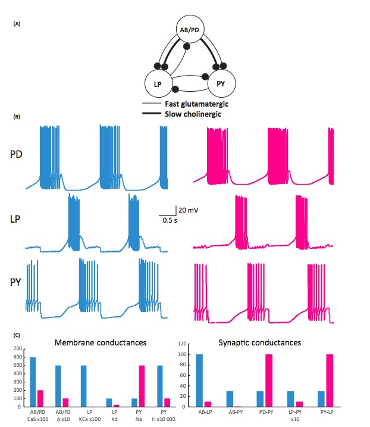

Foundations of Social, Cognitive, and Affective Neuroscience
PSY 511.003 Spr 2025
Overview
Prelude
“If understanding everything we need to know about the brain is a mile, how far have we walked?”
Gilmore bio


- Hiking, camping/backpacking, cycling, paddling
- Music, theatre
- Activism
- Amateur radio (W3TM), computing
Today’s topics
- Why neuroscience is harder than physics
- Course overview
- Does neuroscience need behavior? Does behavioral science need the brain?
Why neuroscience is harder than physics


What do we need to know to answer the question?
- What is the state…
- Of the world (\(W\))
- Of the organism
- Body (\(B\))
- Nervous system (\(N\))
- Mind (\(M\))


Some states are more easily measured than others
- \(W\), \(B\), \(N\) (more or less) directly

Mental states (\(M\))
- Measured indirectly
- Via \(N\), \(B\), \(W\) (+ prior beliefs/knowledge)
- Examples?
What are essential components/dimensions of \(W\)?
What are essential components/dimensions of \(B\)?
Brain & behavior are complex, dynamic systems with
- Components
- Interactions
- Forces/influences
- Boundaries
- Inputs/outputs/processes
Systems…
- “Behave” or change state across time
- Return to starting state
- Appear to be regulated, controlled, influenced by feedback loops
- \(B(t+1) = f(W(t), B(t), N(t), M(t))\)
May be thought of as networks

At multiple levels of organization…


Studying systems is hard because…
- Computation is (often) distributed
- Single parts -> multiple functions
- Single functions -> multiple parts
e.g., “equifinality” in micro-circuits

Studying systems is hard because…
- Change structure/function over time
- Biological systems not “designed” like human-engineered ones
- Hard to measure what is being exchanged, what is being controlled

Course overview
Goals
- Master fundamentals of neuroscientific concepts and facts
- Prepare to read primary source literature in social, behavioral, cognitive, affective, and clinical neuroscience
Structure
https://psu-psychology.github.io/psy-511-scan-fdns-2024-spring/
Questions
- What is the basic organizational plan of the nervous system?
- How do neurons work?
- How do neurons connected in networks achieve behavioral goals?
- How does the nervous system develop? How has it evolved?
- How do disorders of the mind reveal themselves in the nervous system?
Approach
- Brain architecture (neuroanatomy)
- Brain function (neurophysiology)
- Brain communication (neurochemistry)
- Changes over evolutionary and developmental time
Approach
- The nervous system as an information processing system

Inputs
- From environment, body, brain
Processing
- Current inputs + brain state + body state + possible future states…
- Stored information
- Physiological & behavioral goals

Outputs
- To brain, body, environment
Mapping structures to functions…

And vice versa?

“The brainwide representation of behavioral variables suggests that information encoded nearly anywhere in the forebrain is combined with behavioral state variables into a mixed representation…Our data indicate that it happens as early as primary sensory cortex.”
And do we have the right “psychological” structures?
“Psychological sciences have identified a wealth of cognitive processes and behavioral phenomena, yet struggle to produce cumulative knowledge. Progress is hamstrung by siloed scientific traditions and a focus on explanation over prediction, two issues that are particularly damaging…
…for the study of multifaceted constructs like self-regulation…We conclude that self-regulation lacks coherence as a construct…”
“Behavioural biologists don’t agree on what constitutes behaviour”
Behavioural biology is a major discipline within biology, centred on the key concept of ‘behaviour’. But how is ‘behaviour’ defined, and how should it be defined? We outline what characteristics we believe a scientific definition should have, and why we think it is important
…that a definition have these traits. We then examine the range of available published definitions for behaviour.
(Levitis, Lidicker, & Freund, 2009)
Finding no consensus, we present survey responses from 174 members of three behaviour-focused scientific societies as to their understanding of the term. Here again, we find surprisingly widespread disagreement as to what qualifies as behaviour. Respondents contradict themselves…
…each other, and published definitions, indicating that they are using individually variable intuitive, rather than codified, meanings of `behaviour.’
We offer a new definition, based largely on survey responses: “Behaviour is the internally coordinated responses (actions or inactions) of whole living organisms (individuals or groups) to internal and/or external stimuli, excluding responses more easily understood as developmental changes.”
Sciences of complexity

Levels of analysis
David Marr (1945-1980)


Marr’s Three Levels

- What must be computed to carry out task X?
- What algorithm is used to carry out the computation?
- What hardware implements the algorithm?
Break
Your turn
Does neuroscience need behavior?
Krakauer, J. W., Ghazanfar, A. A., Gomez-Marin, A., MacIver, M. A., & Poeppel, D. (2017). Neuroscience needs behavior: Correcting a reductionist bias. Neuron, 93(3), 480–490. https://dx.doi.org/10.1016/j.neuron.2016.12.041.
Parada, F. J. & Rossi, A. (2018). If neuroscience needs behavior, what does psychology need? Frontiers in Psychology, 9, 433. https://doi.org/10.3389/fpsyg.2018.00433.
Key points
- Questions ‘often tacit…belief in the reductionist program for understanding the link between brain and behavior’
- Behavior -> understanding; neural interventions -> causality
- Marr’s 3 levels (computation; algorithm; implementation)
But what is behavior?
“Behavioural biologists don’t agree on what constitutes behaviour”
…“Behaviour is the internally coordinated responses (actions or inactions) of whole living organisms (individuals or groups) to internal and/or external stimuli, excluding responses more easily understood as developmental changes.”


Exercise 01
Main points
- Psychology is harder than physics
- Neuroscience needs behavior
Next time…
- Neuroanatomy lab
- Read/study
- Neuroanatomy notes
- Bring to class a copy of Exercise 02
- Read/study